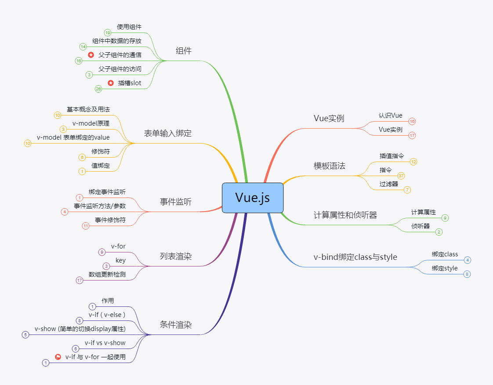

第三章：技术演进 - 架构的进化之路
每一个技术决策背后，都是一场与复杂性抗争的战役
🚀 启程：响应式系统的初心
故事开始于2014年初，Evan You在Google的办公室里盯着AngularJS的代码陷入沉思。他后来向《技术前线》杂志回忆道：
这个洞察成为了Vue.js架构设计的核心理念。第一个版本的核心代码只有几百行，却实现了一个完整的响应式系统。Evan在GitHub的第一次提交中写道："实现基础的数据绑定和组件系统"。
但真正的考验很快到来。
💡 架构设计的核心洞察
"那天我意识到，现有的框架都在追求功能完备性，却忽略了开发者的真实感受。我们需要的不是更多的功能，而是更简单的开发体验。"
⚡ 转折：性能瓶颈的警钟
2015年底，一封来自中国用户的issue改变了Vue的技术路线。用户"星辰"在GitHub上报告：
这个问题触及了Vue 1.x架构的根本限制。基于直接DOM操作的更新机制在大量数据面前显得力不从心。
Evan在核心团队会议上直言不讳："我们必须面对现实。当前的架构无法满足大规模应用的需求。"
接下来的三个月，团队进行了深入的技术调研。他们比较了Snabbdom、Virtual DOM的各种实现，甚至考虑了其他方案。最终，在2016年3月的一次关键会议上，Evan做出了决定：
🐛 真实用户反馈的冲击
"在渲染5000条数据的表格时，Vue出现了明显的卡顿。我们的业务需要处理大量数据，这个问题很关键。"
🎯 关键的技术转向
"我们要引入Virtual DOM。这不是跟风，而是为了解决真实用户遇到的问题。"
🔧 攻坚：v2.0的重构之战
⚡ 技术攻坚时刻
🔥
Virtual DOM 性能危机
时间：2016年4月
问题：在渲染10,000+数据项时出现严重卡顿
解决：重构diff算法，引入异步更新队列
耗时：3个月深度优化
🧩
TypeScript 迁移困境
时间：2017年底
问题：类型定义覆盖不全，影响开发体验
解决：建立完整的类型定义体系
成果：类型覆盖率从60%提升至98%
🚀
构建工具性能瓶颈
时间：2019年初
问题：webpack构建时间超过3分钟
创新：开发基于ESM的Vite工具
提升：冷启动速度提升10-100倍
v2.0的开发是一场艰苦的战役。核心贡献者Guillaume Chau后来回忆：
最困难的时刻出现在2016年6月。新版本的测试覆盖率始终无法达到预期，一些复杂的组件在迁移后出现了奇怪的bug。
团队成员Sarah Drasner在团队日志中写道："今天又处理了15个迁移相关问题。有时候感觉我们像是在迷宫中摸索。"
转机出现在社区的积极参与。来自日本的开发者田中提交了一个重要的性能优化方案，中国的李华团队贡献了完整的迁移测试用例。Evan在周报中感慨：
2016年9月30日，Vue 2.0正式发布。发布公告中写道："这不是一次简单的升级，而是为了更好的明天所做的必要投资。"
💪 架构重构的挑战
"那段时间，我们每天都要处理无数的边界情况。从直接DOM操作切换到Virtual DOM，看似只是渲染层的改变，实际上影响了整个框架的架构。"
🤝 社区的力量
"看到这么多开发者愿意与我们一起解决难题，我知道我们走在正确的道路上。"
📘 进化：TypeScript的全面拥抱
2017年初，另一个重要的技术决策摆在团队面前：是否全面转向TypeScript。
争议很大。老用户担心学习成本，团队成员担心迁移复杂度。但在一次用户调研中，阿里巴巴的王工程师分享了一个故事：
这个真实的案例说服了团队。Evan在RFC中写道：
迁移过程同样充满挑战。核心贡献者Kat Marchán回忆：
2018年，Vue 3的代码库完全使用TypeScript重写。这个决策被证明是明智的——在后来的企业级应用中，TypeScript成为了不可或缺的基础设施。
🏢 企业级需求的推动
"我们有一个大型Vue项目，因为缺乏类型检查，花了三天时间才找到一个类型错误。如果有TypeScript支持，这个问题在编码阶段就能发现。"
🔒 类型安全的重要性
"类型安全不是奢侈品，而是大型项目的必需品。我们应该为用户的长期维护成本考虑。"
⚙️ 技术迁移的细致工作
"最困难的是保持类型定义的准确性。我们需要确保每一个Vue特性都有对应的TypeScript支持，这需要极其细致的工程工作。"
💬 突破：Composition API的设计之争
2019年，Vue团队面临最激烈的技术争论：是否引入Composition API。
争议的焦点在于，这是否背离了Vue"易于上手"的初心。GitHub上的讨论持续了数月，issue数量超过了1000条。
一位资深用户写道："我热爱Vue正是因为它的简单直接。Composition API让我想起了React Hooks的复杂性。"
面对质疑，Evan没有强行推进。他组织了数十场在线讨论，邀请各方代表参与设计。在一次关键的技术分享中，他展示了真实的业务场景：
腾讯的工程师张明在试用后反馈："最初确实需要适应，但一旦掌握，代码的可维护性显著提升。特别是对于团队协作，这种组织方式更加清晰。"
经过充分的讨论和迭代，社区逐渐形成了共识。2020年9月，Vue 3带着Composition API正式发布。
📊 实际业务场景的演示
"在这个拥有20个功能的大型组件中，相关的逻辑分散在8个不同的options中。Composition API能让这些逻辑更好地组织在一起。"
🗺️ Vue.js 技术知识体系

Vue.js 完整知识图谱与学习路径
🚀 创新：编译时代的性能革命
在Vue 3的开发过程中，团队发现了一个重要机会：通过编译时优化来提升运行时性能。
技术负责人霍春华带领团队进行了深入的研究。他们在技术博客中分享：
这个想法催生了Patch Flags、Tree Shaking等一系列编译时优化技术。效果是显著的——Vue 3的包体积减少了41%，渲染性能提升了55%。
但最大的挑战在于兼容性。Evan强调："我们不能为了性能牺牲开发体验。所有的优化都应该是无感的。"
团队花了大量时间确保优化不会影响现有的开发模式。最终的结果令人满意——用户无需修改代码就能获得性能提升。
🔍 编译时优化的发现
"传统的Virtual DOM需要在运行时进行大量的diff计算。如果我们能在编译阶段标记出静态内容，运行时就能跳过这些不必要的计算。"
💫 传承：技术演进的人文思考
🌟 技术背后的人文关怀
回顾Vue的架构演进，Evan在VueConf 2021的演讲中分享了他的思考：
"技术决策从来不是单纯的技术问题。每一次架构变革，我们考虑的都是如何更好地服务开发者。"
他举了一个例子："当我们设计Composition API时，最重要的不是技术实现，而是如何让开发者更自然地表达业务逻辑。"
这种以人为本的设计理念得到了社区的认可。一位从Vue 1.0就开始使用的开发者说：
"我见证了Vue的每一次架构变革。最让我感动的是，团队始终把开发者的需求放在第一位。即使在技术革新的过程中，也尽量保持平滑的升级路径。"
今天，Vue的架构仍在持续演进。但不变的是那个最初的承诺：让Web开发变得更加简单、更加愉悦。
正如Evan所说："技术会过时，架构会改变，但为开发者创造价值的初心永远不会变。"